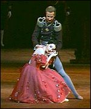
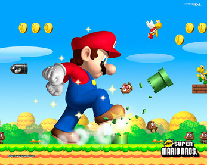

Onegin vs New Super Mario Bros
|---------------------------------------------------------------------:| |:--------------------------------------------------------------------:
|  | |
| | | Onegin | |New Super Mario Brothers
| Company: The Royal Ballet.|
| Onegin | |New Super Mario Brothers
| Company: The Royal Ballet.|  |Developer: Nintendo
| Music: Pyotr Il'yich Tchaikovsky. | |Format: Nintendo DS
| Choreography & libretto: John Cranko | |Released: 2006
|Developer: Nintendo
| Music: Pyotr Il'yich Tchaikovsky. | |Format: Nintendo DS
| Choreography & libretto: John Cranko | |Released: 2006
Introduction
Last week was full of great artistic experiences, but none so sublime as these two masterpieces, which I was lucky enough to witness and complete, respectively, in the last few days. For reasons that I'm sure need no explanation, I've opted to review them side-by-side in a single post.\
History
 Pushkin's original novel, seen here in the English translation.
Pushkin's original novel, seen here in the English translation.
The story of Onegin derives from a Russian novel-in-verse, Eugene Onegin written by Aleksandr Pushkin over the period from 1823 to 1837. It was considered a classic of Russian literature, well-loved enough to be quoted from memory by most Russians. Forty years later, Tchaikovsky and Konstantin Shilovsky created the music and libretto respectively for an operatic version of the same tale. This opera was then choreographed as a ballet by Cranko in 1965, and it is Stolze's 2007 arrangement of this that is now playing at the Royal Opera House in London's Covent Garden.
 Super Mario Bros. on the NES
Super Mario Bros. on the NES
New Super Mario Bros, similarly, represents the culmination of a venerated franchise. The character of Mario first appeared as a nameless 16x16 pixel carpenter in the vintage arcade hit Donkey Kong (1981), and was then retooled as a plumber and christened for Mario Bros. (1983). The core gameplay mechanics of the Mushroom Kingdom were not formulated until Super Mario Bros. (1985), but have formed backbone to the series ever since. Mario has adapted nimbly to several new generations of home consoles and handhelds, but the most significant technical evolution came with Super Mario 64 (1996), which made a superlative triumph out of the difficult transition to 3D, one that continues to stymie many of his contemporaries even to this day. Meanwhile, Mario continues to form the iconic mainstay character in what is generally recognised as the most successful, and certainly the most influential, videogame series of all time.
Form
 Flawlessly timed triple jumps result in extra height.
Flawlessly timed triple jumps result in extra height.
Like so many other DS outings, New Super Mario Bros. is very much a return to form for the champion platformer. It makes solid, competent use of the DS's dual screens and touch-sensitive technology, and brings together the highlights of its distinguished lineage: peerless standards of level design; an endearing levity; crisp, unambiguous graphics; a roster of nostalgically well-known characters with their various abilities and affiliations, and of course the pixel-perfect precision of control that is the very embodiment of Mario. On top of the traditional 2D Mario mechanics, Nintendo have applied their usual expertise, seamlessly incorporating moves from Super Mario 64 et al, enriching and polishing the control scheme, while never complicating it. Wall-jumps, a ground-pound, and a triple-jump, complete with a couple of cheerily superficial somersaults. Never has a controller been so unintimidatingly overloaded with kinetic potential - latent at at first, but blossoming by the third act, when Tatiana, now grown into a charming and sophisticated woman, introduces her husband, Prince Gremin.
Narrative
Both works have in common the attempt to convey a narrative without the aid of verbiage, with significant difficulties encountered in each case.
Dumb, as in mime.
Ballet suffers from an inexpressiveness in this regard, insomuch as the tools at the dancer's disposal are not capable of depicting much in the way of nuanced or fine-grained detail outside of particular, well-trodden areas. Characters may meet, part, or die, and express all manner of elation or sorrow as they go about it, but there are only a limited number of stories that can be told from such components. It is difficult to imagine, say, a political thriller, or even something as familiar and staid as a murder mystery being told without resorting to Spandau ballet. Because of this, the medium as a whole seems to have become something of a creative cul-de-sac, preoccupied with retelling the same formulaic stories over and over again - and even these are considered to be in need of supplementing with a written synopsis in the program.
Disrupting the narrative direction.
Similarly, videogames revolve around the participation of the player, who thus has the means to disrupt any narrative direction or pacing anticipated by the game designer. Whatever story can be told, must perforce be introduced either by the forced insertion of jarringly ungamelike exposition, during which the player is frustratingly robbed of any real input, or else must be told using the limited demonstrative repertoire of in-game action. New Super Mario Bros. sidesteps these difficulties by eschewing all but the most perfunctory storyline, aside from a grown-up nod to the sordid realities behind Bowser's recurrent princess kidnapping, hinted at by Bowser Jr. labouring under the impression than Princess Peach may be his mother.
Overall Impressions
Despite their weaknesses, each of these works represents a good, solid entry in representing the best that the mainstream of their respective fields have to offer. Two marvellous, vigorous and thoroughly enjoyable outings.
Onegin Rating 8/10. An education.
New Super Mario Bros. Rating: 9/10. A triumph.
Comments